整条流程回放：点击步骤展开
目前还没有全部验收完成。下面按正常使用顺序展示已实现流程，逐步标明安装版证据、设计示意和剩余前提。代码、技术检查、文件同步及业务验收分别判断；不使用假登录、假保存或旧隔离库闭环代替当前结果。
打开安装版 → 登录与默认范围 → 工作台 → 用户打开商品 → 七区提取 → 参数与区域核对 → 缺失确认和统一保存 → 采集任务 → 商品/图片/版本 → 导出与记录。设置与关于为辅助入口。
本轮19:14只读核对：原ry-vue的Aden表仍为0、原pepper用途仍缺、18093未就绪，19个安装文件与既有已验版本一致。本机安装版仍运行。当前前提回读。
| 分工 | 已经完成 | 尚未完成 |
|---|
| 主智能体 | 接口对齐、文件分配、集成问题修复、交叉审查、构建，以及桌面/扩展/Host同步完成。 | 新Java候选包未部署；实际Chrome联调、原库完整业务验收及剩余设置矩阵未完成。 |
| 后端智能体 | 默认业务范围、概览统计、分区确认、幂等/无SKU、日期筛选和导出记录查询源码与契约完成。 | 原库事务、并发统计、保存恢复、实际导出及权限反例未联机验。 |
| 桌面智能体 | 计划内页面、主进程/IPC/桥接和取消入口源码完成；安装文件已同步。 | 除登录页/设置局部外，其他页面未在本轮安装版执行完整业务。 |
| 插件智能体 | 七区、预览、参数、范围、失效、缺失确认和统一保存源码完成，最终52项合成检查通过。 | 真实Chrome加载、点选、规格变化、缺失弹窗及保存到桌面回看未验。 |
1. 打开安装版并登录
实际安装版截图（沿用已核对基线）
怎样操作：打开本机Aden Local Test；填写现有账号、密码和实际验证码，点击登录。登录页不选工作空间。
应得到什么：认证后后台解析既有默认业务范围，取得可读初始数据，随后进入工作台；范围缺失、冲突或无权时就近提示，不能任意选空间或新建空间。
当前状态：登录页局部已验证，成功登录受阻。沿用18:46真实安装版图：初始账号密码为空、没有空间选择、密码显隐正常。19:14核对安装文件未变，中心18093仍未就绪；本轮未提交账号或登录。
 实际安装版 · 2026-10-01 18:46，沿用证据
实际安装版 · 2026-10-01 18:46，沿用证据对应既有要求与实际记录：业务点1
2. 查看工作台统计
设计图：解释布局与操作，尚非本轮业务截图
怎样操作：登录后看已保存商品、今日采集任务、待处理，以及最近商品和最近采集任务。点击最近记录进入相应详情。
应得到什么：后台统一统计，上海日期计算今日任务；不以当前列表页条数充当总量，不把读取失败显示成零。首页无插件连接卡、安装指引和商品快捷按钮。
当前状态：源码与定向测试完成，安装版真实数据未验。原库缺Aden表，尚无本轮工作台数据及真实截图。图中的12、8、2是设计示例，不是原库当前统计。
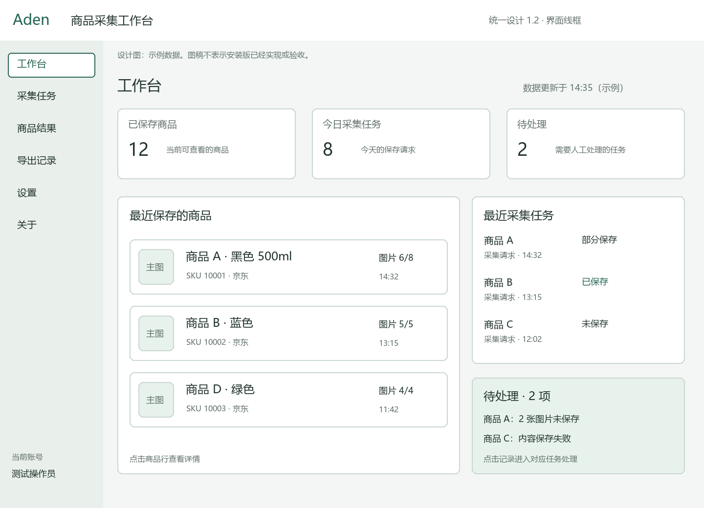
设计示意 · 示例数据；不证明联机结果对应既有要求与实际记录：业务点2 · 业务点18
3. 在Chrome打开商品并选择七区
设计图：解释布局与操作，尚非本轮业务截图
怎样操作：用户自己搜索、登录并打开目标商品详情，在插件中选择商品信息、规格参数、商品介绍、详情内容、主图、轮播图、详情图。默认全选，至少保留一个分区。
应得到什么：插件只读取用户当前已打开、已加载的商品页面。程序不自动搜索、翻页、滚动或切规格。首页与内容说明共用选择状态。
当前状态：合成状态测试完成，实际Chrome未操作。最新扩展文件已同步到安装目录；尚未在实际Chrome核对加载路径，Host注册仍指向另一份Aden Collection Test。
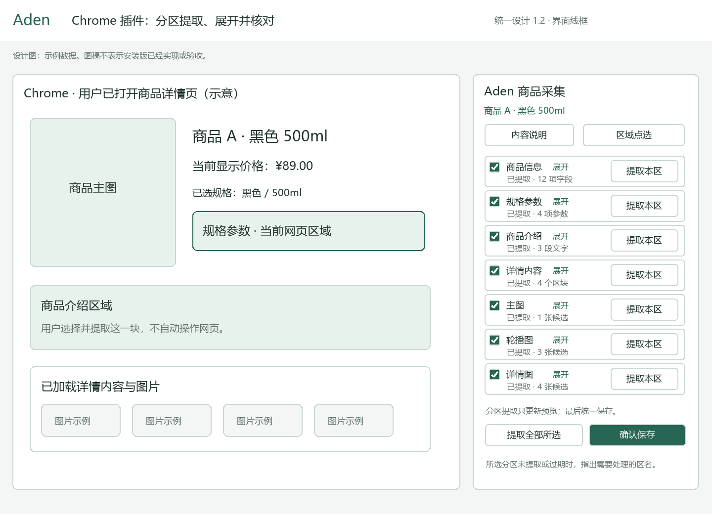
设计示意 · 示例数据；不证明联机结果对应既有要求与实际记录：业务点3 · 业务点6 · 业务点17
4. 逐区提取并展开参数预览
设计图：解释布局与操作，尚非本轮业务截图
怎样操作：先提取规格参数并展开，核对每行名称、网页原值、单位、顺序和来源；再提取主图或其他分区，也可提取全部所选。
应得到什么：重提只替换本区结果，不重复累加；收起仍保留结果。重名参数保留，网页没显示的内容标未知并保留原因；此时不创建商品或写业务库。
当前状态：独立分区和参数技术测试完成，真页预览未验。52项插件合成测试覆盖相应状态与参数反例；真实京东模板、文本和图片来源准确性尚未核对。
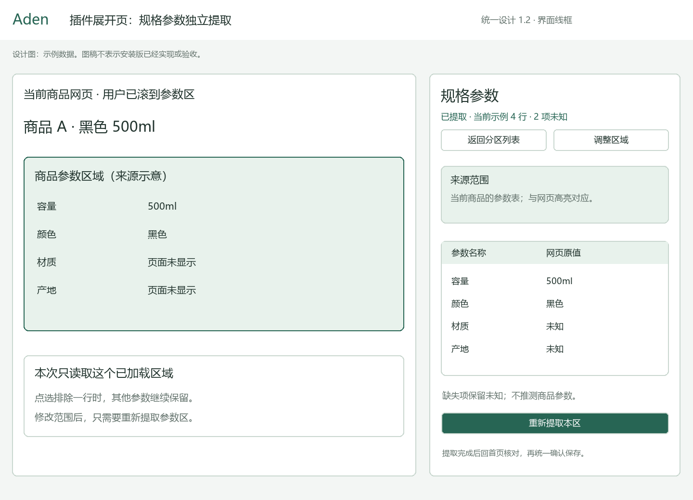
设计示意 · 示例数据；不证明联机结果对应既有要求与实际记录：业务点4 · 业务点5
5. 加入、排除区域并处理旧结果
设计图：解释布局与操作，尚非本轮业务截图
怎样操作：进入区域点选，在网页高亮处核对侧栏样本，确认加入或排除；返回后重新提取受影响分区。点选但未确认的操作不生效。
应得到什么：局部范围变化只使本区失效；商品、规格、文档或权限变化使全部旧预览失效。参数插行、重排或原文变化不能把旧排除应用到新参数。每区最多20条、总计100条规则，超限明确拒绝。
当前状态：漂移及100/101边界已修复测试，真实交互未验。原DOM漂移及范围静默截断问题已修复，合成反例通过。尚无真实Chrome点选、权限撤回和规格变化的操作证据。
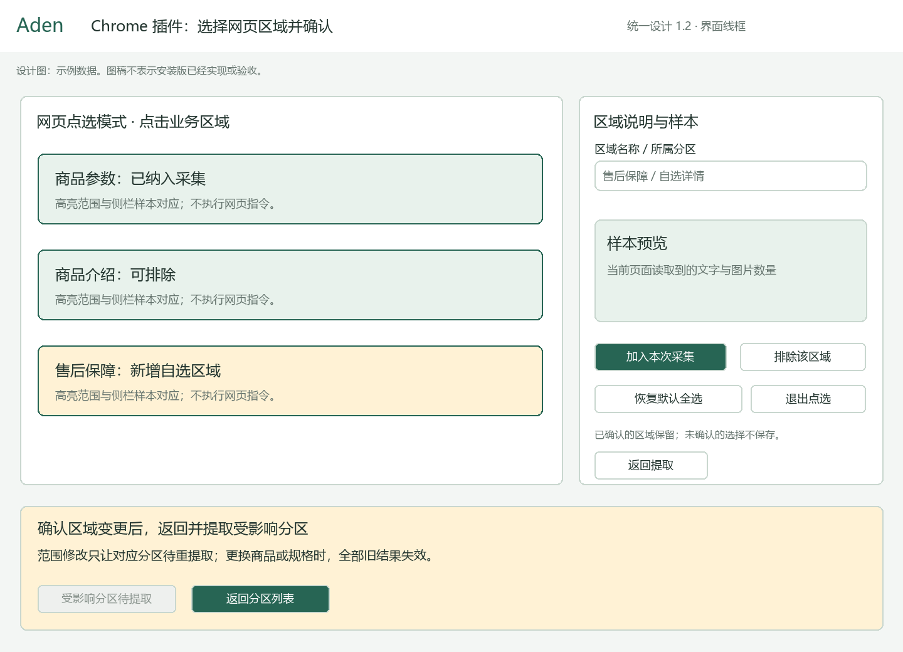
设计示意 · 示例数据；不证明联机结果对应既有要求与实际记录：业务点5 · 业务点6
6. 确认缺失并统一保存
设计图：解释布局与操作，尚非本轮业务截图
怎样操作：回到分区列表核对所有选中区；未提取、提取中或过期时先处理。明确缺失的分区列清单，经用户确认继续后，点击确认保存。
应得到什么：插件聚合一份确认结果，经Host和桌面桥提交Java；后台再次校验页面/规格/版本/来源和逐区缺失确认。内容与图片按既有prepare、分片、commit路径保存，只有后台确认后才显示结果。重复同一确认幂等；新一次采集形成新快照。无SKU留待核对记录，不伪造SKU。
当前状态：三端规则测试完成，原库真实保存受阻。Aden后台候选包已构建但未部署；原3306/ry-vue的Aden表仍为0且缺原pepper用途。当前无法完成Chrome→Host→安装版→Java→原库闭环。
设计示意 · 示例数据；不证明联机结果对应既有要求与实际记录：业务点4 · 业务点7 · 业务点8 · 业务点9 · 业务点13 · 业务点14 · 业务点15 · 业务点17
7. 查看采集任务和保存结果
设计图：解释布局与操作，尚非本轮业务截图
怎样操作：在采集任务按标题/SKU、保存状态和日期查找本次请求，进入任务详情，查看内容与图片保存结果；缺图时只重试失败图片，或停止后续图片。
应得到什么：实际保存完整或部分的数量与原因可追溯；已有内容及图片保留，失败不会伪报完整。任务关联准确的商品和快照，重试不重复成功资源。没有独立处理中或未保存说明卡，也没有其他任务模块。
当前状态：任务接口及页面已实现，真实列表和恢复未验。尚未用原库执行任务查询、日期边界、图片6/8重试至8/8及重启恢复；图中的商品与数量只是设计示例。
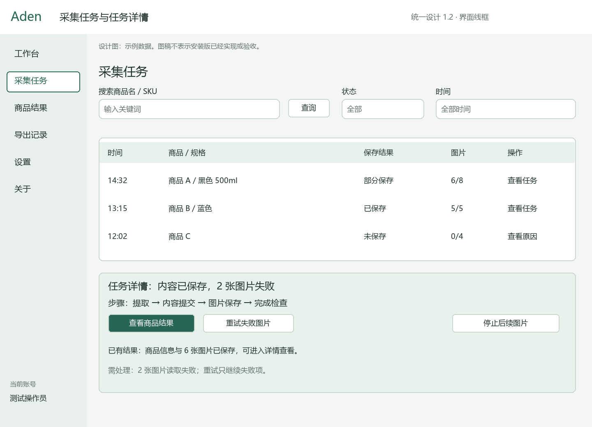
设计示意 · 示例数据；不证明联机结果对应既有要求与实际记录：业务点8 · 业务点15 · 业务点18
8. 回看商品、版本并整理图片
设计图：解释布局与操作，尚非本轮业务截图
怎样操作：从任务进入商品结果，一商品一行；打开详情看原始字段、内容快照及历史版本。可独立保存备注/纠错、上传本地图，设置主图、排序、移除或恢复单图。
应得到什么：人工补充与原始采集分开，历史快照保持；并发冲突不能覆盖他人修改。没有手动新增商品、整件商品删除和回收站入口。图片失败与人工移除区分。
当前状态：组件和文件规则测试完成，安装版真数据未验。商品/图片界面代码已同步；本轮没有登录后的商品截图、实际文件回读或并发编辑证据。
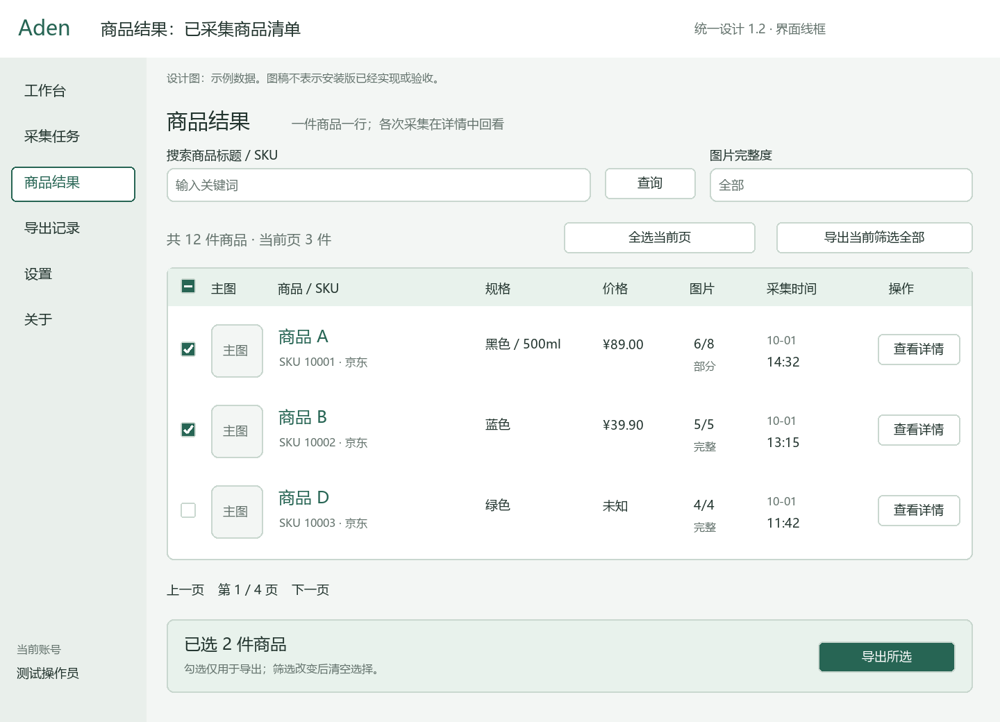
设计示意 · 示例数据；不证明联机结果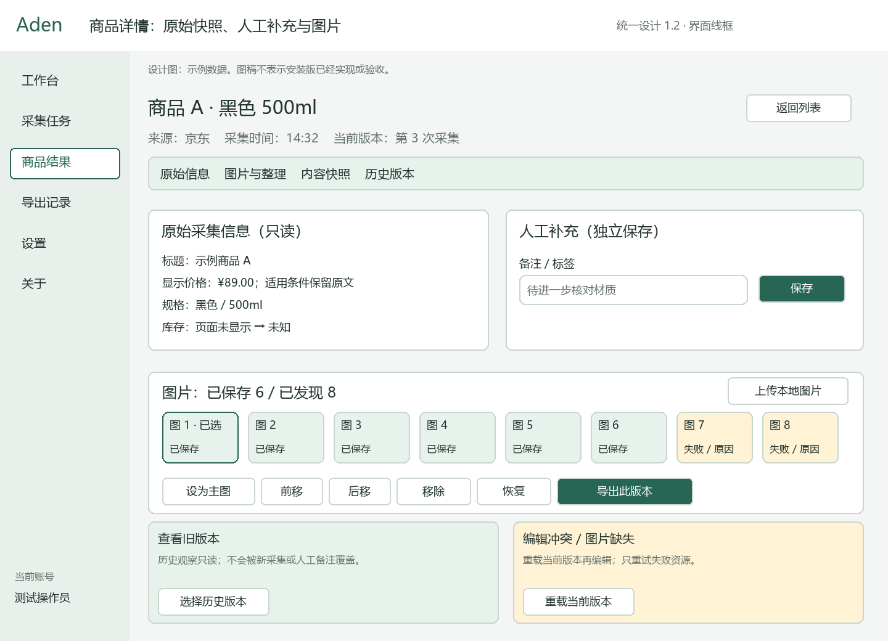
设计示意 · 示例数据；不证明联机结果对应既有要求与实际记录：业务点7 · 业务点9 · 业务点10 · 业务点11 · 业务点18
9. 选择范围导出并查记录
设计图：解释布局与操作，尚非本轮业务截图
怎样操作：勾选商品或选择当前筛选全部，确认数量与固定版本，选择Excel或Excel加图片ZIP，用原生保存对话框确定位置；完成后查看导出记录和下载。
应得到什么：导出使用已保存快照与图片，不回访原站、不补抓。保留来源、未知和缺图清单；后台下载再次鉴权。当前实现是同步导出与记录查询，不能说已经实现异步队列。
当前状态：导出和查询技术测试完成，本轮成品未验。未从原库生成并实际打开本轮Excel/ZIP，也未验证原生取消和撤权后下载。图中的候选状态说明不作为异步作业已实现的证据。
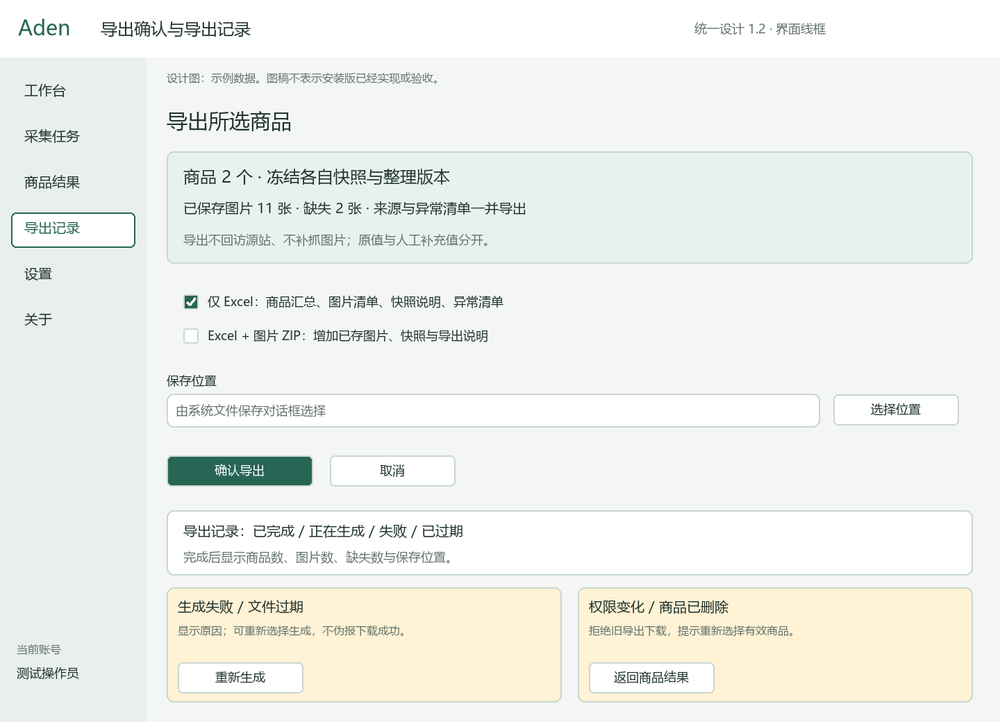
设计示意 · 示例数据；不证明联机结果对应既有要求与实际记录：业务点12 · 业务点13 · 业务点17
10. 设置目录与关于
包含实际设置截图与关于设计图
怎样操作：设置查看本机插件目录、版本和检测时间；点复制后粘贴核对完整路径。关于查看实际版本、使用步骤及展开诊断。
应得到什么：复制前主进程每次重检固定安装文件，只写完整路径；异常就近反馈，没有独立目录缺失/复制失败卡。关于显示实际版本。
当前状态：设置正常复制局部已验证；异常矩阵及关于未验。沿用18:46真实设置截图及系统剪贴板回读；缺文件、剪贴板失败、乱序和全键盘矩阵未执行。关于画面为设计图，本轮未进入实际关于页。
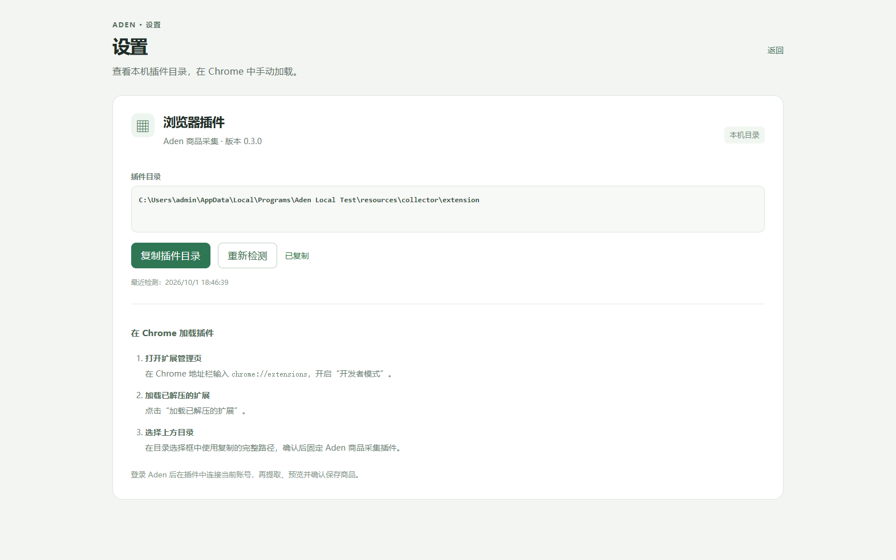
实际安装版 · 2026-10-01 18:46，沿用证据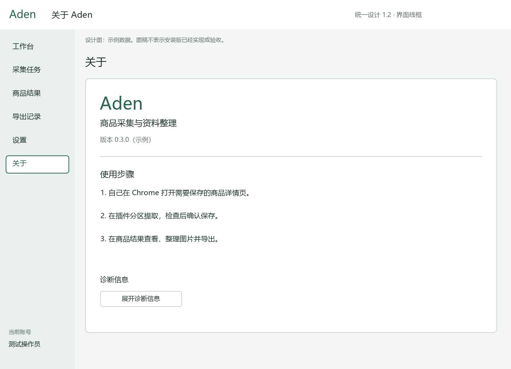
设计示意 · 示例数据；不证明联机结果对应既有要求与实际记录：业务点16 · 业务点17
以上设计图已逐张回读；实际登录/设置截图标明原时间和沿用理由，没有冒称本轮新拍。完整业务统计仍为0通过、17受阻、1未完成，用户接受待确认。
原数据库恢复的实际情况
| 项目 | 当前结果 |
|---|
| 面试 | 正常原库进程保留；原平台MySQL与原业务PostgreSQL，语音开启配置保留。能力端点尚未认证，未从HTTP200宣称语音业务通过。 |
| 智能选品 | Java已用原localhost:3306/ry-vue恢复、验证码HTTP200；Python缺原用途，当前Java实例AI Worker暂停，原.env不改。 |
| Aden、生产排产 | 旧隔离Java/Worker已停止。原MySQL缺各自业务表，Aden还缺原pepper/成员前提，APS缺已核实原业务连接。相关启动与迁移未完成。 |
不创建数据库、不复制隔离业务数据或凭据。补表方案需显式决定；原密钥用途与成员配置另行核对。没有删除闲置旧数据库或其他项目数据。
实际安装版局部检查
固定Aden Local Test.exe，中心18093；未登录、未写DB、没有替代原生对话框。请求宽1024/1440，实际CSS宽1025/1441、PNG1117/1571×983，Windows缩放约1.09。rendererErrors为空。
| 局部步骤 | 结果 | 证据或不足 |
|---|
| 登录界面1024宽度 | 通过 | 实际截图 |
| 登录界面1440宽度 | 通过 | 实际截图 |
| 密码显隐控件 | 通过 | 实际截图 |
| 设置界面1024宽度 | 通过 | 实际截图 |
| 设置界面1440宽度 | 通过 | 实际截图 |
| 匿名离线复制本机目录 | 通过 | 实际截图 |
| 原库登录及保存导出 | 受阻 | 本入口没有真实账号授权与业务写入；原库表/成员及原配置前提另行核对。 |
原始操作结果 · 截图尺寸与回读
原失败和修复后复验
首次截图发现合成账号预填，记失败；已移除构建宏并同步。首个脚本的六项通过未检查空字段，不能覆盖这个实际失败。修复后新入口断言初始账号密码为空；原画面与发现继续保留。
原失败发现 · 原局部脚本结果
1. 登录简化与后台隔离
受阻前提、操作与正确结果
准备有效默认范围、仅一个有效范围、多范围无默认配置、无权限及错误/失效验证码账号。预期登录页没有工作空间选择，有效账号直达工作台；配置错误就近提示，不任意选范围或新建空间。退出后旧请求不可带入新会话，直接改请求仍不能越界。保存登录、工作台和拒绝画面，核对后台归属。
实际结果与业务影响
- 安装版初始账号和密码为空，没有工作空间选择；两种宽度无整页横向溢出，密码显隐控件正常。
- 原预填合成账号问题已观察为Fail，移除编译宏并同步后局部复验通过；原图与发现保留。
- 验证码读取因中心未就绪显示无法连接中心服务，未提交登录；默认范围、权限及退出链路未执行。
原库缺 Aden 业务表、必要托管用途及既有有效成员；无法执行该业务链路。
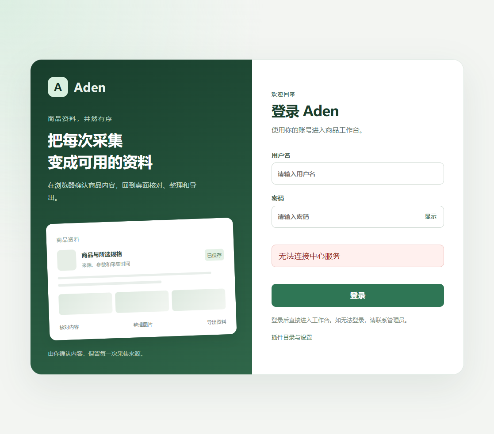
登录界面-1024.png · 已逐张回读登录界面-1440.png · 已逐张回读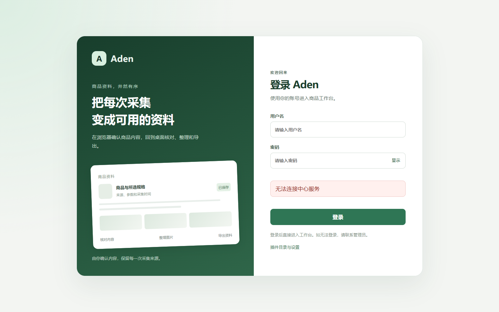
登录界面-密码控件.png · 已逐张回读2. 工作台统计与近期数据
受阻前提、操作与正确结果
独立准备三件商品、同 SKU 两次采集、重复保存请求及两项需处理任务，并跨上海日期边界准备任务。预期商品去重计数、今日任务口径和待处理数符合预先清单，最近记录倒序且点击进入对应详情；首页没有插件连接卡、检查连接、安装、连接指引或商品快捷按钮。空数据为零，读取失败提示而不伪装为零。保存概览与对应详情并核对后台数据。
实际结果与业务影响
- 完整业务流程未执行，当前已确认的前提不足见下方说明。
原库缺 Aden 业务表、必要托管用途及既有有效成员；无法执行该业务链路。
3. 七区采集选择
受阻前提、操作与正确结果
打开受控商品页和插件，核对默认全选，取消再恢复，点击“内容说明”并“返回提取”。预期两处状态一致，来源和页面身份不可关闭，操作不自动浏览商品页；窄侧栏及键盘均能到达选择、说明和返回。保存默认与修改后的侧栏及说明页画面。
实际结果与业务影响
- 完整业务流程未执行，当前已确认的前提不足见下方说明。
尚未完成实际 Chrome 新扩展加载；Host 注册指向另一安装，保存链路另缺原库前提。
4. 分区提取与统一保存
受阻前提、操作与正确结果
先提取规格参数，再提取主图，展开/收起核对已标注值；重提参数后再“提取全部所选”，最后确认保存。预期每区只更新本区摘要与预览，不累加旧结果，展开不丢失结果，提取不产生商品；任一所选区未提取或过期不能保存，已明确缺失要展示清单并确认继续。后台只接收同页面同规格的有效聚合，成功后任务与商品一致。保存每区预览、禁用原因、缺失确认和最终商品画面并核对数据。
实际结果与业务影响
- 完整业务流程未执行，当前已确认的前提不足见下方说明。
尚未完成实际 Chrome 新扩展加载；Host 注册指向另一安装，保存链路另缺原库前提。
5. 网页区域加入与排除
受阻前提、操作与正确结果
点选默认区块排除，再加入一个已标注自选区域；检查高亮与侧栏样本，退出点选并重新提取。另点选但不确认就返回。预期已确认选择同步、样本匹配，未确认操作不生效；受影响分区待重提取，未受影响结果保留，小区块操作不关闭整个大区块，失效定位不能落到推荐或广告。增加参数表重名、缺项、排除一行与范围修正样本，核对逐项键值、单位、顺序与来源。保存点选、返回、预览失效和重提取画面。
实际结果与业务影响
- 完整业务流程未执行，当前已确认的前提不足见下方说明。
尚未完成实际 Chrome 新扩展加载；Host 注册指向另一安装，保存链路另缺原库前提。
6. 页面权限与规格变化
受阻前提、操作与正确结果
在提取或保存前跳转、关闭标签、撤回权限或更换规格。预期旧请求停止并说明原因，不混合商品、不静默扩大权限，重新授权和提取后才可继续。保存阻断说明和相关后台记录。
实际结果与业务影响
- 完整业务流程未执行，当前已确认的前提不足见下方说明。
尚未完成实际 Chrome 新扩展加载；Host 注册指向另一安装，保存链路另缺原库前提。
7. 内容快照与离线回看
受阻前提、操作与正确结果
保存带未加载区块的样本，关闭源页后查看结果与内容。预期已加载内容可回看，未加载部分明确缺失；不会访问原站、执行网页脚本或混入个人信息。保存详情与快照画面，核对预标注范围。
实际结果与业务影响
- 完整业务流程未执行，当前已确认的前提不足见下方说明。
原库缺 Aden 业务表、必要托管用途及既有有效成员；无法执行该业务链路。
8. 图片部分保存和恢复
受阻前提、操作与正确结果
准备 8 张候选，其中 2 张故意无法获取；保存后核对实际文件，再只重试失败项或停止后续图片。预期保留内容和已存文件，显示 6/8 及原因，缺图不伪报完整；重试有版本且不重复已有资源。保存任务、缩略图、失败和恢复画面，核对文件哈希及数量。
实际结果与业务影响
- 完整业务流程未执行，当前已确认的前提不足见下方说明。
原库缺 Aden 业务表、必要托管用途及既有有效成员；无法执行该业务链路。
9. 同 SKU 重采与重复点击
受阻前提、操作与正确结果
对同一保存请求重复提交，再修改样本并明确进行第二次采集。预期前者幂等，后者新增快照；不同 SKU 分开，历史版本可查看且不被覆盖。保存版本列表和前后内容，核对请求与版本数量。
实际结果与业务影响
- 完整业务流程未执行，当前已确认的前提不足见下方说明。
原库缺 Aden 业务表、必要托管用途及既有有效成员；无法执行该业务链路。
10. 商品清单与人工补充
受阻前提、操作与正确结果
从任务进入已保存商品，核对标题/SKU、规格、价格、图片数、时间与版本；补充备注、上传本地图并进行并发编辑。预期列表一商品一行、详情可回看各次采集，人工来源明确且冲突不覆盖他人结果；没有手动新增、回收站、商品删除或其他任务入口。保存列表、详情、人工来源和冲突提示。
实际结果与业务影响
- 完整业务流程未执行，当前已确认的前提不足见下方说明。
原库缺 Aden 业务表、必要托管用途及既有有效成员；无法执行该业务链路。
11. 图片整理
受阻前提、操作与正确结果
调整主图和顺序、移除并恢复单图，回看原始图片与历史导出。预期只更新人工整理版本，原始快照和文件保持，移除图与下载失败图区分；无整件商品删除或回收站流程。保存整理前后及历史回看画面并核对版本。
实际结果与业务影响
- 完整业务流程未执行，当前已确认的前提不足见下方说明。
原库缺 Aden 业务表、必要托管用途及既有有效成员；无法执行该业务链路。
12. 搜索、选择与批量范围
受阻前提、操作与正确结果
对跨页结果进行当前页全选、单选、切换筛选和“导出当前筛选全部”。分别在 1024/1440 宽度用鼠标及键盘打开、取消、重新进入确认框。预期数量明确，筛选改变清空选择并提示；筛选全部只决定这次导出，不改变当前页勾选；未选商品不能默认导出全库。焦点可见，关闭弹窗后回到原触发控件，无整页横向溢出。保存列表、范围确认、逐项反馈及两种宽度画面。
实际结果与业务影响
- 完整业务流程未执行，当前已确认的前提不足见下方说明。
原库缺 Aden 业务表、必要托管用途及既有有效成员；无法执行该业务链路。
13. Excel 与图片包导出
受阻前提、操作与正确结果
选择两件具有不同版本与缺失图片的商品，分别导出 Excel 与 ZIP；生成期间再次采集其中一件。预期文件仍使用冻结版本，商品、图片、快照和缺失数量与独立清单一致，原值和人工值可辨；无公式注入、路径穿越或源站补抓。保存确认和完成画面，实际打开表格并解包核对。
实际结果与业务影响
- 完整业务流程未执行，当前已确认的前提不足见下方说明。
原库缺 Aden 业务表、必要托管用途及既有有效成员；无法执行该业务链路。
14. 权限撤回与存储配额
受阻前提、操作与正确结果
分别用只读账号尝试写入、越空间读取图片、生成后撤回权限再下载、接近配额时保存。预期后台拒绝且原因清楚，旧下载不绕过权限，已存数据可读，系统不自动永久删除。保存拒绝或配额画面并核对数据未误写。
实际结果与业务影响
- 完整业务流程未执行，当前已确认的前提不足见下方说明。
原库缺 Aden 业务表、必要托管用途及既有有效成员；无法执行该业务链路。
15. 断线、重启与任务读取
受阻前提、操作与正确结果
采集处理中断开中心连接、重开桌面或回收插件后台，恢复后进入任务详情。预期先取后台状态，不由旧缓存报成功；任务查询和详情可读，有界恢复，不将错误显示成空列表。保存断开、重连和任务详情画面。
实际结果与业务影响
- 完整业务流程未执行，当前已确认的前提不足见下方说明。
原库缺 Aden 业务表、必要托管用途及既有有效成员；无法执行该业务链路。
16. 简洁设置与复制目录
未完成前提、操作与正确结果
在目录正常、缺文件、配置无效、离线和剪贴板失败样本下打开设置并复制；仅在隔离安装目录中，先显示可用再移走必需文件并复制，另制造两次检查响应乱序。预期每次复制前主进程重新核查，失败不写剪贴板，页面不接受任意路径、迟到结果不覆盖最近检查；复制值完整且无额外换行或引号，失败可手工复制；目录和复制失败只就近反馈，不出现两块独立异常卡。1024/1440 宽度和键盘路径可用，不修改插件或浏览器。保存各状态、最近检查及粘贴后的完整路径证据。
实际结果与业务影响
- 匿名且中心离线时打开设置，目录与本机resources/collector/extension完全相同。
- 点击复制后回读系统剪贴板，仅包含完整路径，无额外引号或换行；就近显示已复制。
- 未改注册表、插件状态或另一安装。余下失败与键盘矩阵未执行，整项不计通过。
正常目录、离线复制和两种宽度的局部步骤已执行；缺文件、剪贴板失败、乱序及全键盘矩阵未执行，缺少完整场景证据。尚未执行不作为已确认阻塞。
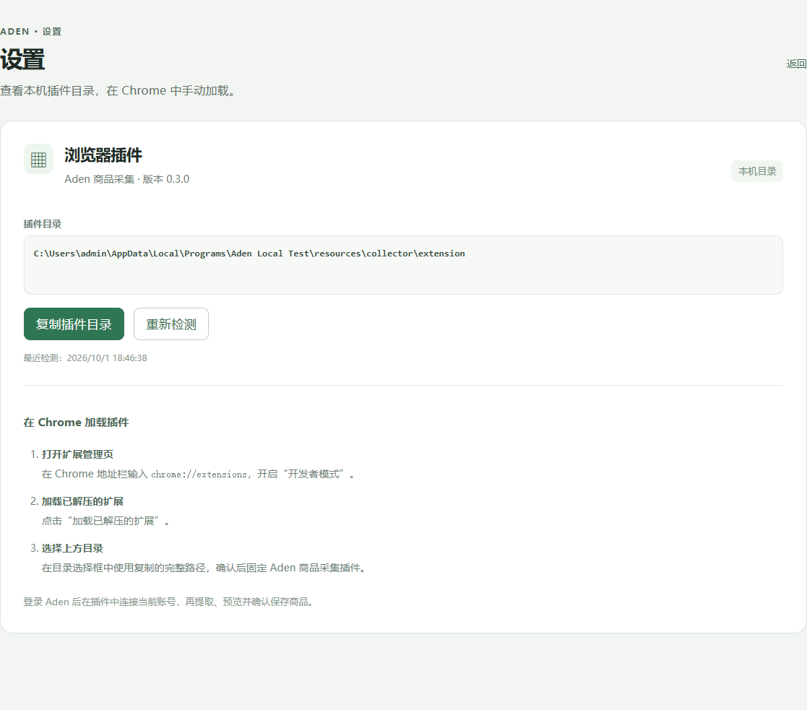
设置界面-1024.png · 已逐张回读设置界面-1440.png · 已逐张回读设置界面-复制成功.png · 已逐张回读17. 安装组件兼容与更新
受阻前提、操作与正确结果
修改已确认范围的桌面或插件组件，按其分发方式更新，退出再从安装版启动。预期实际安装文件与新构建一致，旧产物可恢复；不兼容时禁用相关操作并解释，不以工作区构建代替安装版效果。保存版本与相关页面，分别核对桌面、扩展、Host 和后台。
实际结果与业务影响
- 最终桌面out、扩展、Host和管道文件与源码构建逐文件哈希一致，旧产物有备份；从固定安装EXE启动检查。
- 原库后台未能启动；Chrome实际加载和注册兼容未执行，Host仍指向Aden Collection Test，不能据文件同步声称全链路更新通过。
安装文件已最终同步并回读；后台及实际Chrome组件兼容仍因原库/注册前提受阻。
设置界面-1440.png · 已逐张回读18. 简化导航与任务呈现
受阻前提、操作与正确结果
核对全部页面导航，进入采集任务列表与详情。预期没有其他任务模块、新增和回收站入口，任务页没有独立“处理中”“未保存”说明卡；实际状态、缺失和重试操作仍在对应任务内可核对。共用底座成功、取消和恢复用固定合成数据通过技术测试路径检查，保留旧记录，不为该检查重建用户模块。保存导航、任务表和详情画面。
实际结果与业务影响
- 完整业务流程未执行，当前已确认的前提不足见下方说明。
原库缺 Aden 业务表、必要托管用途及既有有效成员；无法执行该业务链路。
技术检查、分发与限制
以下检查单独记录，不计入上方18项业务通过数。
| 检查 | 结果 | 能证明的范围 |
|---|
| 后台定向测试 | 通过 | 本轮12个类最新分项报告累计75项；不同执行批次，不能写成一次全量75项。末次分区补丁3类27项通过。未连接真实MySQL。 |
| 桌面测试与类型检查 | 通过 | 18:39完整Vitest 23文件135项通过；去掉预填后18:43新增登录组件1项通过。最终sync:local包含完整类型与契约生成核对、Vite和产物检查，exit0；不是再执行一次136项。 |
| 插件合成测试 | 通过 | 插件智能体最终 npm test 52/52；纯合成DOM/状态测试，非真实Chrome侧栏。依据该智能体实际输出。 |
| 本机Host测试与构建 | 通过 | Host智能体20/20；PyInstaller打包 exit0。真实注册仍指向另一安装，未改。 |
| Java候选包构建 | 通过 | 18:34:54共享聚合package成功；仅保留Aden不可变候选，未部署原库。 |
| 安装文件同步 | 通过 | 桌面out、12个扩展分发文件及Host/管道源码产物哈希逐文件匹配；旧产物备份保留。 |
| 局部界面检查 | 通过 | 安装版登录/设置6项局部检查；未登录、未写DB、没有替代原生对话框；rendererErrors=[]。 |
| 原库联机检查 | 受阻 | 原库无Aden/APS表，显式迁移决定未到达；不把mock或schema文件存在当作数据库通过。 |
| 报告整页视觉检查 | 未完成 | 本地HTML预览此前被内置浏览器URL安全策略拒绝；不通过HTTP/CDP绕过。静态链接检查及应用PNG回读独立记录。 |
分项记录及报告时间 · 安装文件哈希与备份 · 未部署的Aden候选包 · 源码原文保护
应用实际PNG已逐张打开回读；报告整页视觉预览此前受内置浏览器URL安全策略限制，未绕过。静态结构与本地链接核对无缺失；四个脚本解析、Node语法及差异空白检查通过。静态核对记录 · 最终安装版启动回读。用户接受仅在用户明确确认范围和版本后更新。